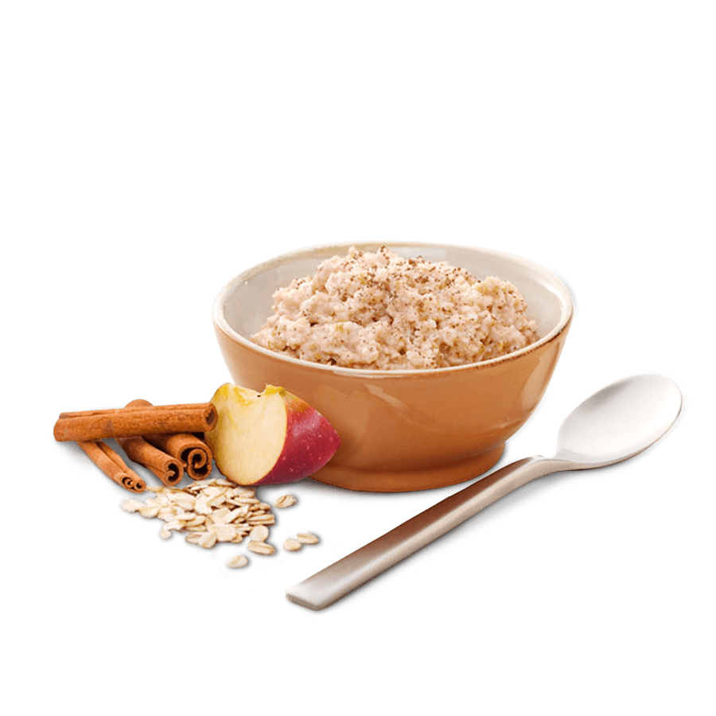

Butterscotch Oatmeal

Description
The best oatmeal I've ever had. No need to top this with sugar afterwards.
Good with or without milk.
Ingredients
- 1 egg, beaten
- 1 3/4 cups milk
- 1/2 cup packed brown sugar
- 1 cup rolled oats
- 2 tablespoons butter
Steps
- In a saucepan over medium heat, whisk together the egg, milk and brown sugar.
- Mix in the oats. When the oatmeal begins to boil, cook and stir until thick.
- Remove from the heat, and stir in butter until melted. Serve immediately.